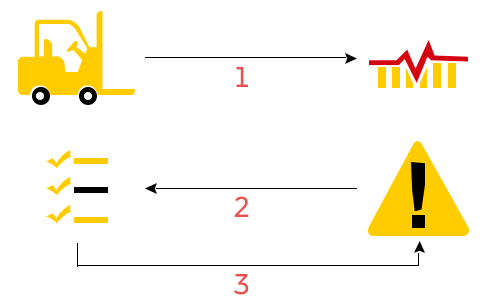

<section class="track_trace1">
  <div class="row">
    <div class="col-md-4 col-sm-4 col-xs-12 col-lg-6  col-md-push-3">
      <div class="cont_align">
        <h1 class="text_center">Asset Monitoring</h1>

        <p class="wht_isIOT text_center">
          Our Asset monitoring empowers you to manage facilities and equipment
          pertaining to your requirements. The monitoring of your assets could
          be done from any location on the globe with tracking sensors
          increasing the ability to reduce costs and increase efficiency to your
          processes. It provides opportunities for safety, productivity and
          security to your assets.

          <br />
          <br />Current application on the IoT Platform is
          <a
            target="_blank"
            href="http://dhl-wms.southeastasia.cloudapp.azure.com/"
            class="linkStyle"
          >
            Warehouse Operations Intelligence
          </a>
        </p>
      </div>
    </div>
    <div
      class="col-md-4 col-sm-4 col-xs-12 col-lg-6 col-md-push-3 clr_both"
      id="WhatisIoT"
    >
      <div>
        
      </div>
    </div>
  </div>
</section>
